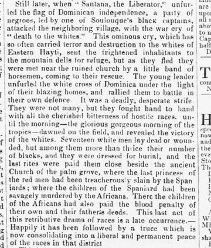

A Visit to the Island.Una visita a la isla.
Wilmington Journal. Wilmington, N.C., December 16, 1853. Page 4. Published by Alfred L. Price and David Fulton. A weekly newspaper, 1844–1895.Wilmington Journal. Wilmington, N.C., 16 de diciembre de 1853. Página 4. Publicado por Alfred L. Price and David Fulton. Periódico semanal, 1844–1895. View the originalVer el original

The paper gives a dramatic, racially framed period account of an attack on a Dominican village by a party led by one of Soulouque's captains after Santana raised the flag of Dominican independence, and of local horsemen rallying residents to a hand-to-hand fight. It says the account ended with a truce said to be consolidating into peace.El periódico ofrece un relato dramático y con marco racial propio de la época sobre un ataque a un pueblo dominicano por una partida liderada por uno de los capitanes de Soulouque después de que Santana izara la bandera de la independencia dominicana, y sobre jinetes locales que reunieron a los residentes para una lucha cuerpo a cuerpo. Dice que el relato terminaba con una tregua que se consolidaba en paz.
FULL TEXT:TEXTO COMPLETO:
Wilmington Journal December 16, 185316 de diciembre de 1853
Original in English.Original en inglés.
A Visit to the Island.
Correspondence of the New York Tribune.
AT SEA, Thursday Nov. 24, 1853.
Have you place in your columns and interest in your heart for that rich and romantic island, which, with all its wondrous dowry of tropical beauty, is an orphan and a stranger in the midst of our American seas? Santo Domingo is scarcely ten days' sail from the port of New York, and all her magnificent shores teem with historic legends; yet it is an unknown land in the United States. There Columbus first planted on church and fortress, the cross of Christ and the flag of Castile at the discovery of the New World, and there he mourned in chains his gift of new empires to the ever cruel and ungrateful Spain. There tradition still points out the scenes where the confiding, but not cowardly, princes of the soil made their last fruitless and fatal struggles for freedom and existence.
There on the green slopes of Laborna even now overlooked by a crumbling chapel once dedicated to our Lady of Mercy, amid the stately palms and broad leaved foliage of the tropics, we may trace the path of three strange massacres—brutal and furious massacres of race. In successive waves of retribution the Spaniards who had inveigled the princess of those hills to a banquet, and there shot down her collected followers and family in cold blood, were themselves slaughtered by the desperate natives they were collecting to work the gold mines. Again, a century later, those green recesses were stained with the blood of women and children by the negroes of the West, frantic with successful insurrection and so thirsty for the blood of the whites that they drank it—literally drank it—in their unchained delirium. The venerable priest who plead for the lives of these innocent and helpless victims, fell with his uplifted cross in the midst of the bloody pile, and from that day the voice of prayer and the incense of sacrifice has ceased in that ancient chapel.
Still later, when "Santana, the Liberator," unfurled the flag of Dominican independence, a party of negroes, led by one of Soulouque's black captains, attacked the neighboring village, with the war cry of "death to the whites." This ominous cry, which has so often carried terror and destruction to the whites of Eastern Hayti, sent the frightened inhabitants to the mountain dells for refuge, but as they fled they were met near the ruined church by a little band of horsemen, coming to their rescue. The young leader unfurled the white cross of Dominica under the light of their blazing homes, and rallied them to battle in their own defence. It was a deadly, desperate strife. They were not many, but they fought hand to hand with all the cherished bitterness of hostile races, until the morning—the glorious gorgeous morning of the tropics—dawned on the field, and revealed the victory of the whites. Seventeen white men lay dead or wounded, but among them more than thrice their number of blacks, and they were dressed for burial, and the last rites were paid them close beside the ancient Church of the palm grove, where the last princess of the red men had been treacherously slain by the Spaniards; where the children of the Spaniard had been savagely murdered by the Africans. There the children of the Africans had also paid the blood penalty of their own and their father's deeds. This last act of this retributive drama of races is a late occurrence.— Happily it has been followed by a truce which is now consolidating into a liberal and permanent peace of the races in that district
This is but one episode of the wild poetry of the Island history. The gold districts of Ciboa and Cotuy abound in tales of romance. Each abandoned stronghold on its lofty hills, each ruined hall falling into decay amid its deep forests, each silent city of her once fertile but now desolate vegas, has its own story of pride, prosperity and overthrow.
From the city of Columbus to the palace of Faustin, through her mahogany forests and tangled dells, by her lonely bridle paths and over her rough-piled ore-mountains, I hope to visit, with ample time and scope, all that St. Domingo presents of the highest historic interest, of the most striking natural beauty, and of the greatest promise to civilization and the advancement of her own sons in the path of American progress. The Dominicans make generous invitation to the people of the "grand oldest daughter of American Liberty—the sons of the North American Union, to come and share on free and equal terms the gifts which nature has bestowed upon their island;" and it is just to both Republics that the Press of the United States should declare to the world the character and value of those gifts.
CORA MONTGOMERY.
This story also ran inEsta historia también apareció en
Carried by 2 newspapers in 2 states over 58 daysLa llevaron 2 periódicos en 2 estados a lo largo de 58 días